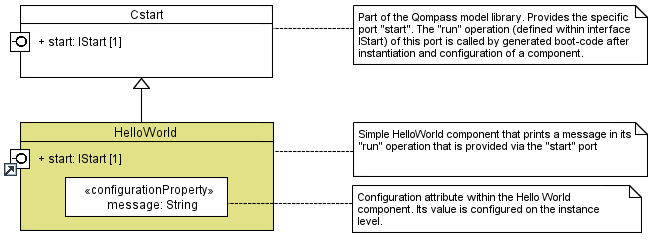
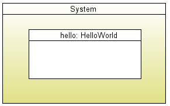
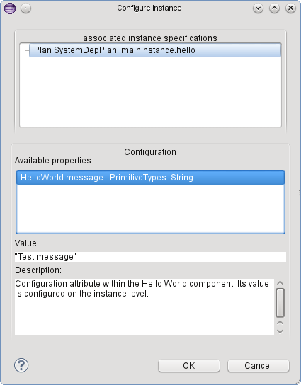
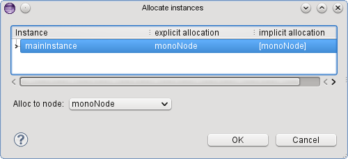
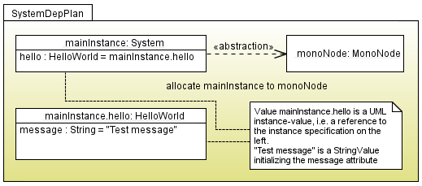

Hello world example with Qompass
In the sequel, we outline a simple hello world example using qompass designer. Please note that the example
can be found via File->New->Example in the category Qompass examples. There are also two cheat-sheets that explain how
to create your own example from scratch.
As for all Qompass examples, there are three different parts that needs to be modeled
- The software components
- An abstraction of the hardware platform
- A so-called deployment plan, i.e. a set of component instance definitions along with their configuration and
allocation of software components to hardware nodes
In the sequel, we will go through all of these items with a focus on the the definition of the software components.
Definition of software components
The example consists of two components, detailed below
The hello-world component
The hello-world component is shown in the following screen shot.

The hello world component inherits from a component called CStart. This is an abstract component defined in the
Qompass core model library. It owns a port (called start) that provides the pre-defined interface IStart. This
interface has a single operation run. Components that provide an interface via a port need to implement this
interface. This include ports that are inherited. In our case, the hello world component needs to implement the IStart
interface, i.e. contain an operation "run" as well as a behavior for this operation.
Qompass supports the user by automatically creating derived operations for interfaceS provided via a port, i.e. the operation
signature is copied (and synchronized on demand) from the interface. The developer needs to provide behavior. In UML, behavior
can be specified either via activities or by embedding code in a programming language (opaque behavior) into the model.
Currently, Qompass focuses on the latter,in particular in form of embedded C++ code. A simple C/C++ view allows to enter
the code, as shown in the following screenshot (there is ongoing work concerning a CDT editor integration)

The code outputs "Hello World" and an additional message that is an attribute of the hello world component. The attribute message
is declared as a UML String, but it does not have a particular contents on the level of the component definition. We will
see in the section explaining deployment plans how this contents can be defined.
The specific start port enables a component to get the initial control. Its run operation is called at system
start-up by a generated boot-loader.
A system component
All Qompass applications need to define a top-level component, typically called System that aggregates its components,
in our case the hello-world component. It is defined by means of a composite class, contained components are
modeled via attributes (use composite aggregation for these) typed by the contained components. Note that we define a role (or part)
within a composition, the hello world component declaration is not part of the system class. This role corresponds to an
instance of a class in the deployment plan below.
In our simple hello world example, there is a single component only. Thus, there are no connections between components (so called assembly). take a look at the
producer-consumer example to see how the assembly can be done.

Definition of an abstract hardware platform
In parallel to the software component, the hardware platform or merely an abstraction thereof can be defined. The main objective
of this step is to define computational nodes on which the software can be allocated. A node isa stereotyped class that defines
for the moment only quite basic information about a computational node, such as the provided memory and operating system.
The following screenshot defines a platform for the Hello World component. The HWArchitecture class has a similar
function for the platform as the System class has for the software: it represents the used notes and their interconnections.
In this simple example, the hardware architecture contains a single node.

Definition of a deployment plan
A deployment plan is a collection of instance specifications, stored within a UML package. It has two objectives. The first is
to configure an instance of a component, i.e. to provide values for configuration attributes. The second is to allocate
instance to processing resources such as threads or directly to a node of the platform definition.
In case of the hello world component, the message that should be written is a configuration attribute. Qompass provides a
dialog that simplifies the configuration of this attribute. The dialog lists instances and their configuration attributes and
enables the user to provide a value in a text field. On the model level, a corresponding slot and a value specification are
produced.

The allocation is also simplified by means of a custom dialog. The instances of a system are shown by means of a tree structure
and the user can either allocate leafs or a parent node. In our case, the whole system should be allocated to node "monoNode", as
shown in the screenshot below. On the model level, allocation is a MARTE relationship.

The last screenshot shows the resulting deployment plan, the package containing two instance specifications and the slots along
with the configured values. You also see the allocation of the system component. Note, that the visualization of all instances
in a diagram is often not useful for larger applications, since the graphical visualization does not provide additional
information compared to the tree structure depicted by the dedicated dialog.

The last step is the code generation which can be executed via the context menu of a deployment plan. The code generation creates an CDT project
which can be compiled and executed.